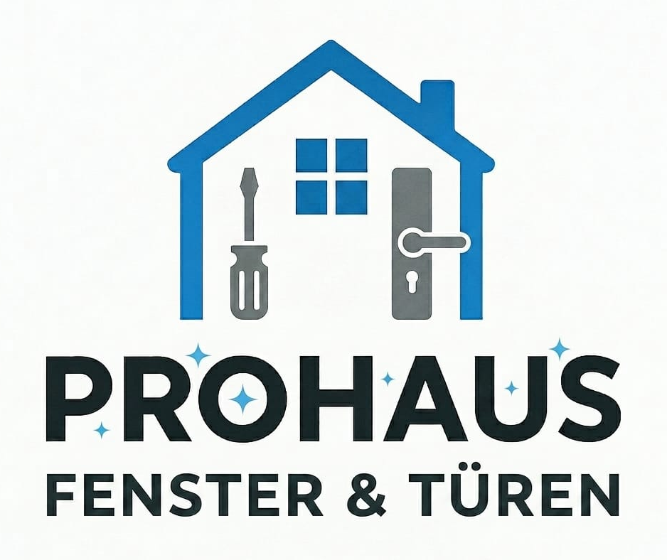
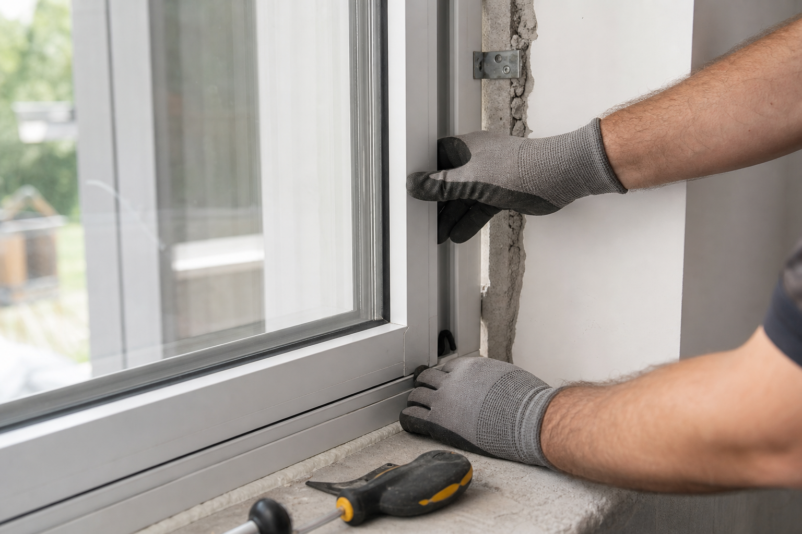
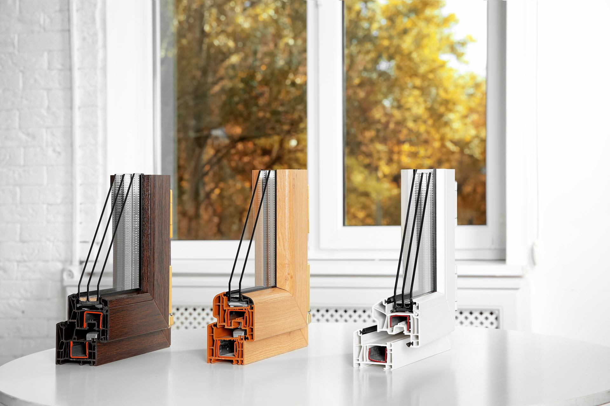
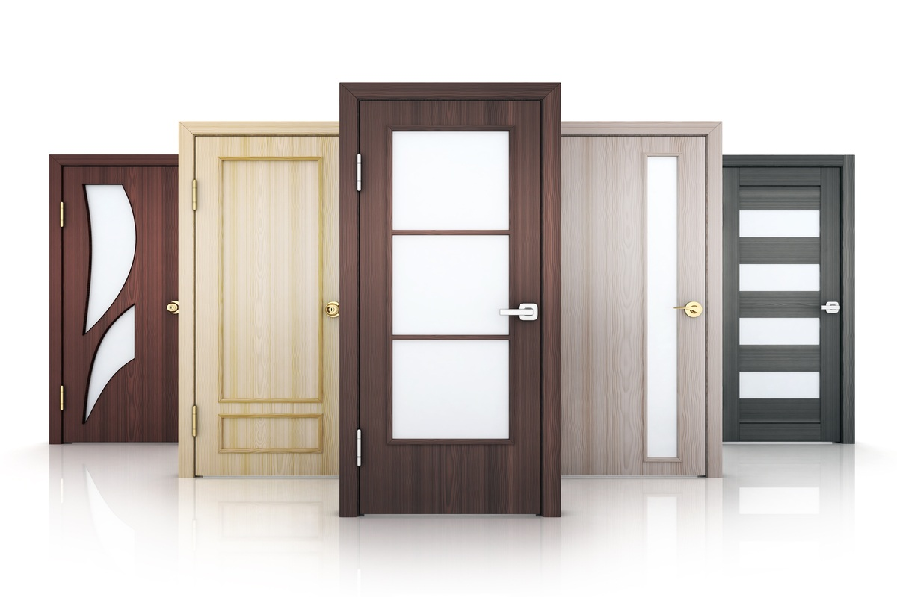
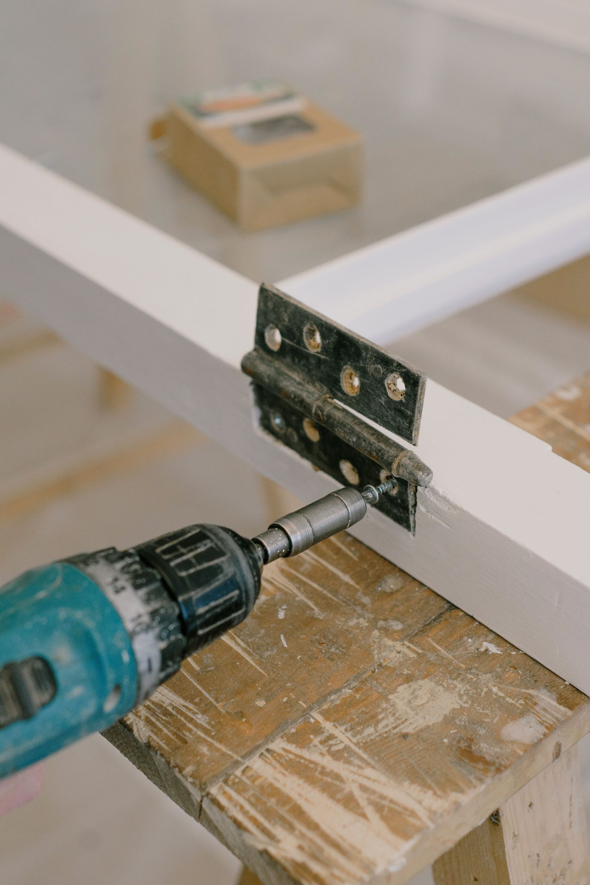
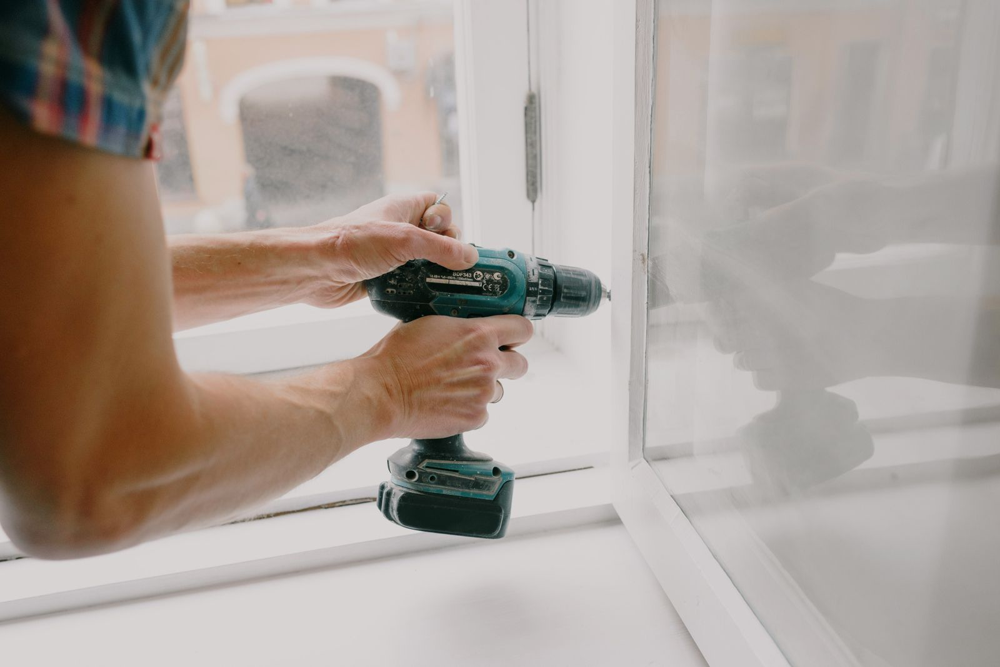
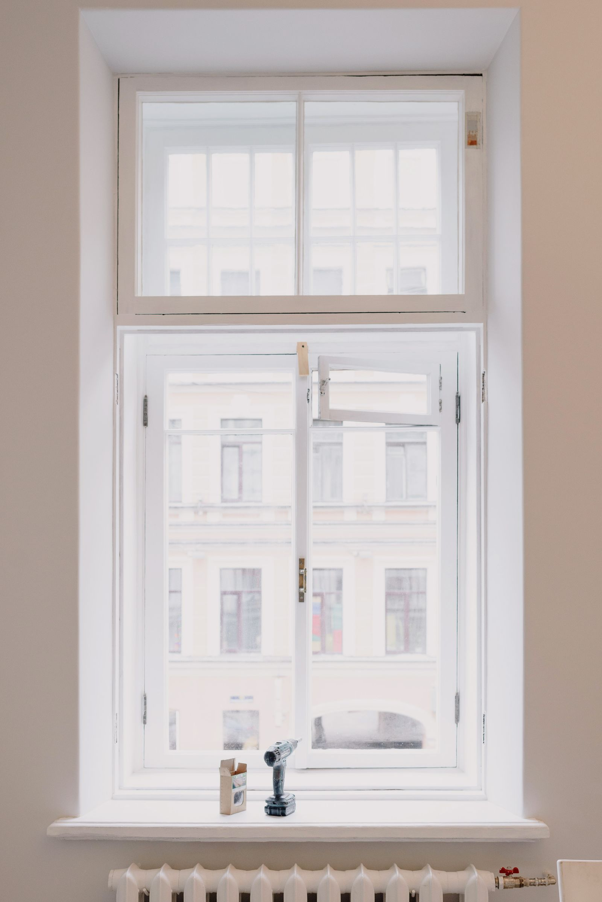
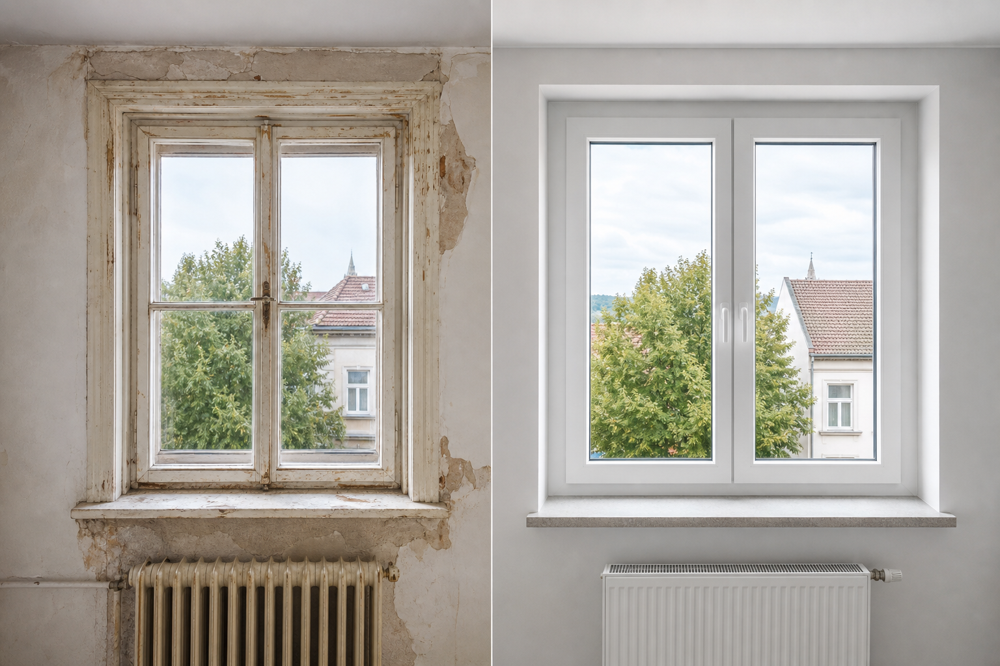
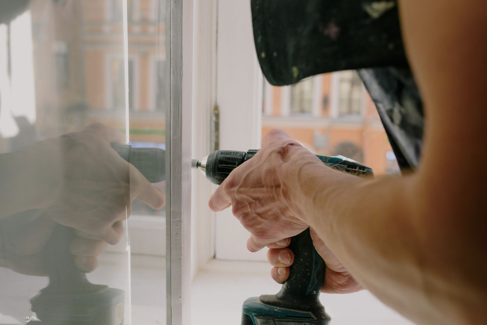
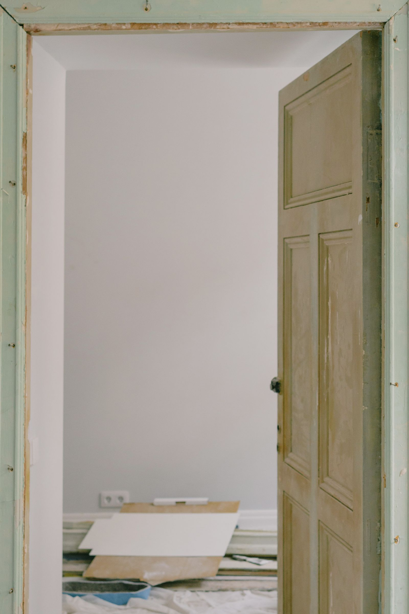

Maße und Fotos senden
Messen Sie Breite und Höhe oder senden Sie Fotos der Fenster, Türen oder Öffnungen, die ersetzt werden sollen.

Fenster, Türen und saubere Montage
PROHAUS montiert Fenster, Haustüren und Innentüren mit passenden Profilen, Materialien und Beschlägen. Von PVC und Aluminium bis Holzoptik, Anthrazit und modernen schwarzen Türprofilen.
Senden Sie Fotos oder Maße, erhalten Sie eine passende Empfehlung für Profil, Material und Ausführung sowie ein transparentes Angebot für Lieferung und Montage.
Messen Sie Breite und Höhe oder senden Sie Fotos der Fenster, Türen oder Öffnungen, die ersetzt werden sollen.
Wir empfehlen PVC, Aluminium, Holzoptik, Glasanteil, Beschläge und Türsysteme passend zu Objekt und Budget.
Sie erhalten ein klares Angebot mit Material, Montagepreis und dem nächstmöglichen Termin.

Profile mit stabilem Beschlag, guter Isolierung, moderner Optik und sauberem Wandanschluss.
Türsysteme mit guter Abdichtung, sicherem Beschlag, Glasoptionen und hochwertiger Oberfläche.
Saubere Montage von Innentüren, Türrahmen und Zargen für Wohnungen, Häuser und Renovierungen.
Sorgfältiger Ausbau alter Elemente, präzises Einsetzen, Abdichten sowie Rollläden und Insektenschutz.
Profile und Oberflächen werden nach Objekt, gewünschter Optik, Sicherheit, Isolierung und Preis ausgewählt. Möglich sind PVC-Profile, Aluminiumprofile, Premiumsysteme, Haustüren mit Glas, glatte moderne Türen, Holzoptik, Anthrazit, Weiß und weitere Optionen.

Profile nach WahlPVC, Holzoptik und moderne Oberflächen für unterschiedliche Häuser, Wohnungen und Budgets.
TürmaterialienHolzoptik, Metall, Glasdetails und moderne Oberflächen passend zum Innenbereich.Material, Profil, Beschlag und Abdichtung entscheiden über Optik, Sicherheit, Bedienkomfort und Lebensdauer.

Von alten Fenstern, Türen und offenen Rahmen bis zu stabiler Montage, sauberer Abdichtung und einem ordentlichen Endergebnis.


Gute Abdichtung und saubere Abschlussarbeiten sind wichtig für Isolierung und Langlebigkeit.
Bei Türen zählen exaktes Ausrichten, stabile Befestigung, passende Beschläge und saubere Übergänge.
Eine professionelle Montage besteht aus klaren Linien, passenden Materialien, stabilen Beschlägen, sauberer Abdichtung und einem Ergebnis, das zum Gebäude passt.




Angebot anfragen
Füllen Sie das Formular aus. WhatsApp öffnet sich automatisch mit einer vorbereiteten Nachricht, die Name, Telefonnummer, Maße und Ihre Nachricht enthält.